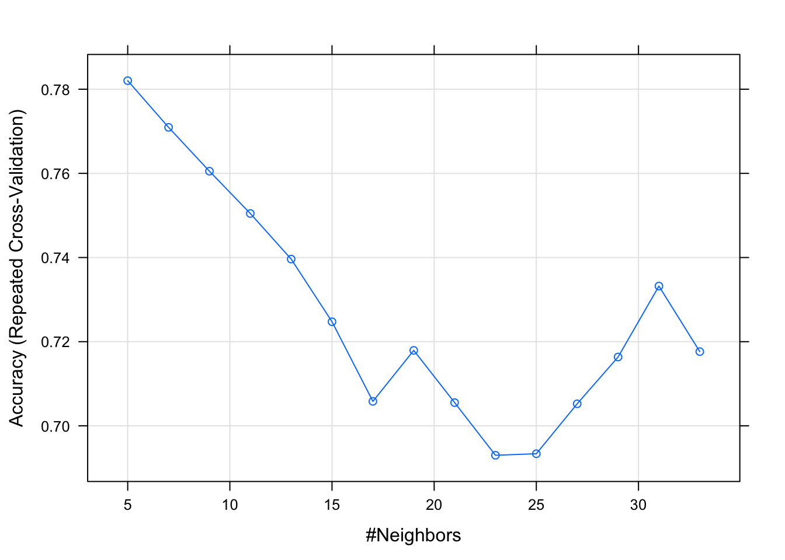

Introduction
The goal of this notebook is to introduce the k-Nearest Neighbors instance-based learning model in R using the class package. For this example we are going to use the Breast Cancer Wisconsin (Original) Data Set. The steps for loading and splitting the dataset to training and validation are the same as in the decision trees notes
Training & Prediction
There is a kNN algorithm in the class package.
library(class)Because all the attributes are between 1 and 10 there is no need to do normalization between 0 and 1, since no attribute will dominate the others in the distance calculation of kNN. Because kNN accepts the training and testing datasets without the target column, which puts in a 3rd argument, we are going to do some data manipulation to have the data the way the knn function likes them (look the manual with ?knn). Also, because no missing values are allowed in kNN, let???s remove those too.
trainData <- trainData[complete.cases(trainData),]
validationData <- validationData[complete.cases(validationData),]
trainDataX <- trainData[,-ncol(trainData)]
trainDataY <- trainData$Class
validationDataX <- validationData[,-ncol(trainData)]
validationDataY <- validationData$ClassLets predict, since there is no need to training when using kNN. The training instances are the model.
prediction = knn(trainDataX, validationDataX, trainDataY, k = 1)You can play with the values of k to look for a better model.
Evaluation
Make the predictions for the validation dataset and print the confusion matrix:
cat("Confusion matrix:\n")## Confusion matrix:xtab = table(prediction, validationData$Class)
print(xtab)##
## prediction benign malignant
## benign 99 4
## malignant 6 60cat("\nEvaluation:\n\n")##
## Evaluation:accuracy = sum(prediction == validationData$Class)/length(validationData$Class)
precision = xtab[1,1]/sum(xtab[,1])
recall = xtab[1,1]/sum(xtab[1,])
f = 2 * (precision * recall) / (precision + recall)
cat(paste("Accuracy:\t", format(accuracy, digits=2), "\n",sep=" "))## Accuracy: 0.94cat(paste("Precision:\t", format(precision, digits=2), "\n",sep=" "))## Precision: 0.94cat(paste("Recall:\t\t", format(recall, digits=2), "\n",sep=" "))## Recall: 0.96cat(paste("F-measure:\t", format(f, digits=2), "\n",sep=" "))## F-measure: 0.95Cross Validation
For performing cross-validation we will use the caret package. Here you can find a quick guide to caret.
Split data in two groups
The function createDataParitiion does a stratified random split of the data. Similar to what we did above ourselves (not stratified though). Then we will use the train function to build the kNN model.
library(caret)## Loading required package: lattice## Loading required package: ggplot2##
## Attaching package: 'caret'## The following objects are masked from 'package:MLmetrics':
##
## MAE, RMSElibrary(mlbench)
data(Sonar)
set.seed(107)
inTrain <- createDataPartition(y = Sonar$Class, p = .75, list = FALSE)
training <- Sonar[ inTrain,]
testing <- Sonar[-inTrain,]
nrow(training)## [1] 157nrow(testing)## [1] 51kNNFit <- train(Class ~ .,
data = training,
method = "knn",
preProc = c("center", "scale"))
print(kNNFit)## k-Nearest Neighbors
##
## 157 samples
## 60 predictor
## 2 classes: 'M', 'R'
##
## Pre-processing: centered (60), scaled (60)
## Resampling: Bootstrapped (25 reps)
## Summary of sample sizes: 157, 157, 157, 157, 157, 157, ...
## Resampling results across tuning parameters:
##
## k Accuracy Kappa
## 5 0.7683412 0.5331399
## 7 0.7559100 0.5053696
## 9 0.7378175 0.4715006
##
## Accuracy was used to select the optimal model using the largest value.
## The final value used for the model was k = 5.We can also search for the best k value given the training dataset.
kNNFit1 <- train(Class ~ .,
data = training,
method = "knn",
tuneLength = 15,
preProc = c("center", "scale"))
print(kNNFit1)## k-Nearest Neighbors
##
## 157 samples
## 60 predictor
## 2 classes: 'M', 'R'
##
## Pre-processing: centered (60), scaled (60)
## Resampling: Bootstrapped (25 reps)
## Summary of sample sizes: 157, 157, 157, 157, 157, 157, ...
## Resampling results across tuning parameters:
##
## k Accuracy Kappa
## 5 0.7477453 0.4840235
## 7 0.7189901 0.4225515
## 9 0.7211797 0.4275156
## 11 0.7140987 0.4150135
## 13 0.7031182 0.3932055
## 15 0.7034819 0.3945755
## 17 0.6914316 0.3698916
## 19 0.6855830 0.3588189
## 21 0.6847459 0.3619330
## 23 0.6821917 0.3571894
## 25 0.6626137 0.3186673
## 27 0.6551801 0.3042504
## 29 0.6660760 0.3291024
## 31 0.6643681 0.3273283
## 33 0.6697744 0.3389183
##
## Accuracy was used to select the optimal model using the largest value.
## The final value used for the model was k = 5.To create a 10-fold cross-validation based search of k, repeated 3 times we have to use the function trainControl:
ctrl <- trainControl(method = "repeatedcv", repeats = 3)
kNNFit2 <- train(Class ~ .,
data = training,
method = "knn",
tuneLength = 15,
trControl = ctrl,
preProc = c("center", "scale"))
print(kNNFit2)## k-Nearest Neighbors
##
## 157 samples
## 60 predictor
## 2 classes: 'M', 'R'
##
## Pre-processing: centered (60), scaled (60)
## Resampling: Cross-Validated (10 fold, repeated 3 times)
## Summary of sample sizes: 142, 142, 142, 142, 141, 142, ...
## Resampling results across tuning parameters:
##
## k Accuracy Kappa
## 5 0.7820261 0.5548350
## 7 0.7709314 0.5321546
## 9 0.7605147 0.5111479
## 11 0.7504657 0.4924263
## 13 0.7396324 0.4705332
## 15 0.7247386 0.4401370
## 17 0.7058170 0.4006357
## 19 0.7179330 0.4246010
## 21 0.7055229 0.4003491
## 23 0.6930065 0.3779050
## 25 0.6933742 0.3791319
## 27 0.7052451 0.4028364
## 29 0.7163562 0.4277789
## 31 0.7332108 0.4629731
## 33 0.7176389 0.4335254
##
## Accuracy was used to select the optimal model using the largest value.
## The final value used for the model was k = 5.plot(kNNFit2)
For predictions:
knnPredict <- predict(kNNFit2, newdata = testing )
#Get the confusion matrix to see accuracy value and other parameter values
confusionMatrix(knnPredict, testing$Class )## Confusion Matrix and Statistics
##
## Reference
## Prediction M R
## M 25 9
## R 2 15
##
## Accuracy : 0.7843
## 95% CI : (0.6468, 0.8871)
## No Information Rate : 0.5294
## P-Value [Acc > NIR] : 0.0001502
##
## Kappa : 0.56
## Mcnemar's Test P-Value : 0.0704404
##
## Sensitivity : 0.9259
## Specificity : 0.6250
## Pos Pred Value : 0.7353
## Neg Pred Value : 0.8824
## Prevalence : 0.5294
## Detection Rate : 0.4902
## Detection Prevalence : 0.6667
## Balanced Accuracy : 0.7755
##
## 'Positive' Class : M
## Adding more information in the output:
ctrl <- trainControl(method = "repeatedcv", repeats = 3, classProbs=TRUE, summaryFunction = twoClassSummary)
kNNFit4 <- train(Class ~ .,
data = training,
method = "knn",
tuneLength = 15,
trControl = ctrl,
preProc = c("center", "scale"))## Warning in train.default(x, y, weights = w, ...): The metric "Accuracy" was
## not in the result set. ROC will be used instead.kNNFit4## k-Nearest Neighbors
##
## 157 samples
## 60 predictor
## 2 classes: 'M', 'R'
##
## Pre-processing: centered (60), scaled (60)
## Resampling: Cross-Validated (10 fold, repeated 3 times)
## Summary of sample sizes: 142, 142, 142, 141, 141, 141, ...
## Resampling results across tuning parameters:
##
## k ROC Sens Spec
## 5 0.8846768 0.8773148 0.6988095
## 7 0.8613467 0.8726852 0.6678571
## 9 0.8642361 0.8601852 0.6500000
## 11 0.8592634 0.8518519 0.6494048
## 13 0.8527364 0.8282407 0.6250000
## 15 0.8384011 0.8009259 0.5994048
## 17 0.8389550 0.8004630 0.5904762
## 19 0.8246280 0.8087963 0.5988095
## 21 0.8219783 0.8125000 0.6125000
## 23 0.8125951 0.8055556 0.6125000
## 25 0.8139716 0.7898148 0.6351190
## 27 0.8118676 0.7893519 0.6535714
## 29 0.8090112 0.7842593 0.6577381
## 31 0.8090939 0.7958333 0.6625000
## 33 0.7983300 0.7606481 0.6815476
##
## ROC was used to select the optimal model using the largest value.
## The final value used for the model was k = 5.plot(kNNFit4)
And finally how to use bootstrap with the caret package:
knnFit5 <- train(Class ~ .,
data = training,
method = "knn",
preProcess = c("center", "scale"),
tuneLength = 10,
trControl = trainControl(method = "boot"))
knnPredict2 <- predict(knnFit5, newdata = testing)
#Get the confusion matrix to see accuracy value and other parameter values
confusionMatrix(knnPredict2, testing$Class)## Confusion Matrix and Statistics
##
## Reference
## Prediction M R
## M 25 9
## R 2 15
##
## Accuracy : 0.7843
## 95% CI : (0.6468, 0.8871)
## No Information Rate : 0.5294
## P-Value [Acc > NIR] : 0.0001502
##
## Kappa : 0.56
## Mcnemar's Test P-Value : 0.0704404
##
## Sensitivity : 0.9259
## Specificity : 0.6250
## Pos Pred Value : 0.7353
## Neg Pred Value : 0.8824
## Prevalence : 0.5294
## Detection Rate : 0.4902
## Detection Prevalence : 0.6667
## Balanced Accuracy : 0.7755
##
## 'Positive' Class : M
## Reference: http://rstudio-pubs-static.s3.amazonaws.com/16444_caf85a306d564eb490eebdbaf0072df2.html